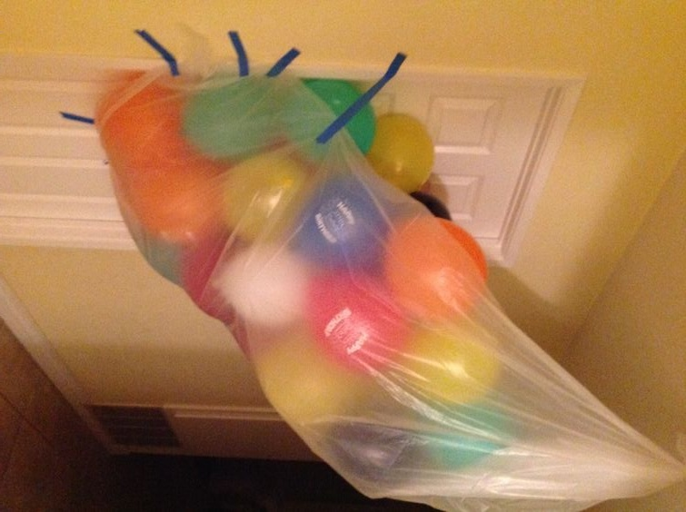

Have you ever felt like your patience is just… one balloon away from popping? 🎈 Pranks can be hilarious—or totally annoying. One little joke might make you laugh, but add a little more pressure, and suddenly the balloon is about to burst. So—what’s your burst point? When a prank happens, do you laugh it off? Do you secretly get annoyed but hide it because it’s your friend? Or do you feel it cross the line right away? This quiz is your chance to find out how much “air” your prank balloon can handle before it pops. Ready to test your prank tolerance?